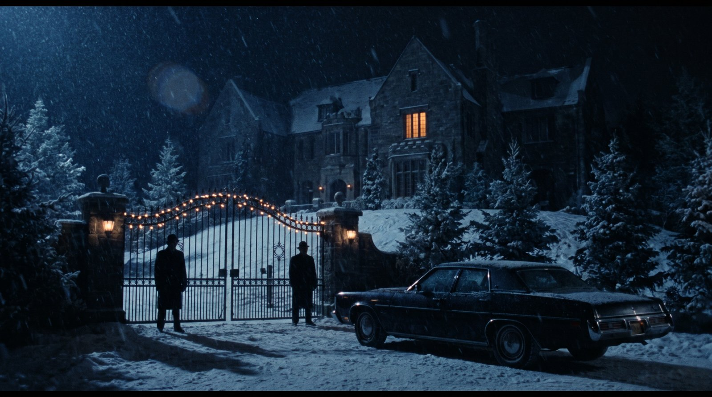
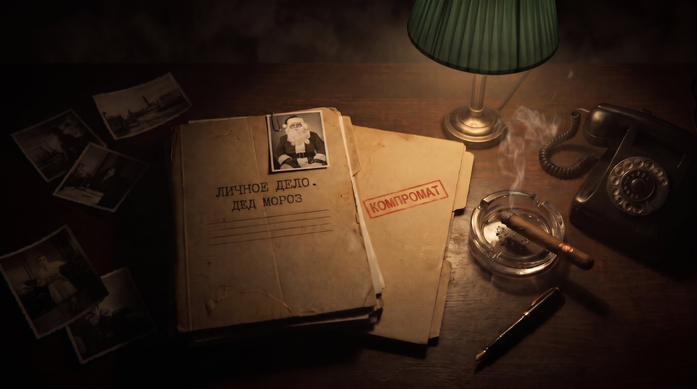
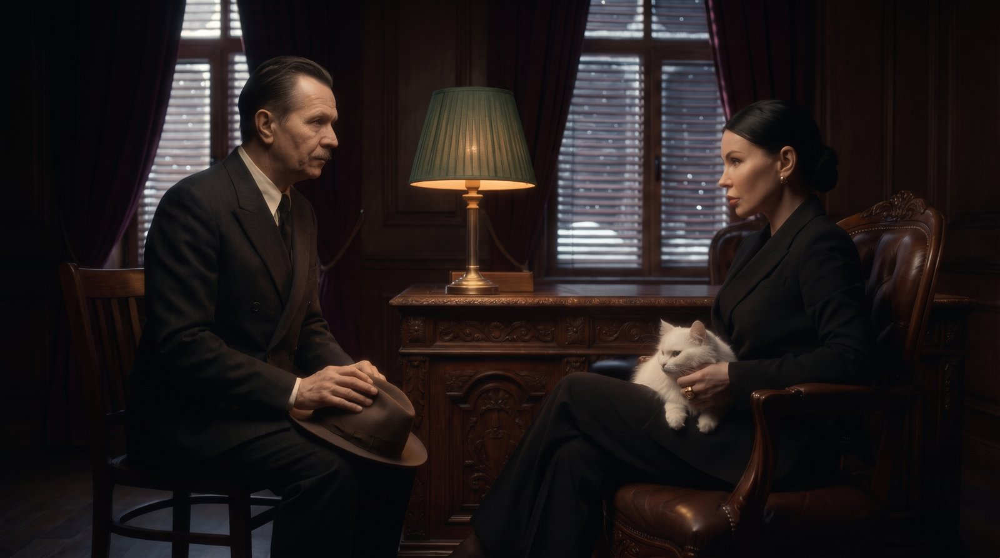
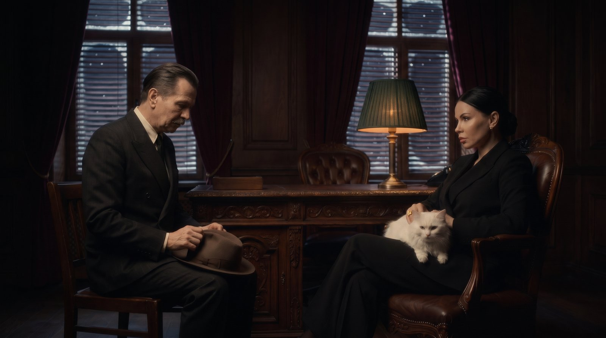
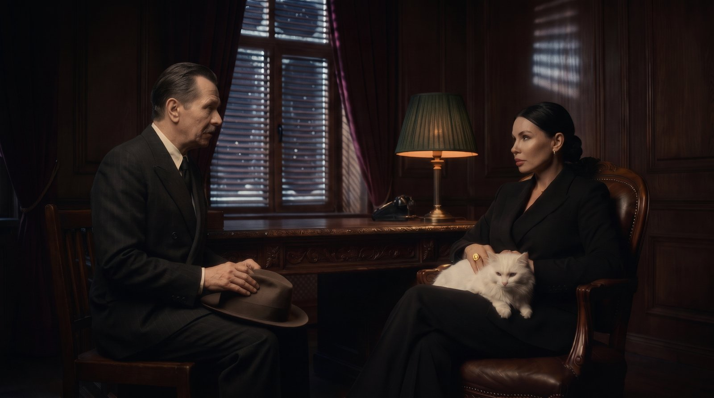

«Крёстная мать», часть 1: 3 сцены
Сначала утверждаем картинки, потом оживляю в Veo. Все клипы разговора начинаются и заканчиваются одним кадром, поэтому лица и комната не уедут.
Сцена 1. Вилла

Готовое вступление: Columbia, вилла, вальс, «КРЁСТНАЯ МАТЬ».
Сцена 2. Стол: «Личное дело», «Компромат»

Под музыку, без слов. Дым сигары, тикают часы.
Сцена 3. Разговор друг напротив друга: выбери вариант

Ближе всех. Стол и лампа между ними. Кот смотрит на менеджера.

Шире, видно комнату. Менеджер опустил голову.

Настя сидит сбоку от стола, ближе к нему. Самый «ровный» кадр.
Реплики сцены 3
Он: «Крёстная… мне очень нужен Дед Мороз. Это вопрос жизни и смерти. Я прошу тебя… помоги».
Она: «Значит, я правильно поняла? Ты, сука, посмел явиться в мой дом ночью… и просить у меня Деда Мороза? На самую горячую дату?»
Он: «Прости, Крёстная мать. Я сделаю всё что угодно».
Она: «Ладно. Я пойду тебе навстречу. Но ты будешь мне должен».